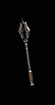
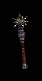
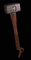

|

闇族毀滅者
棍棒
Dark Clan Crusher
Cudgel
|
單手傷害:
17 - 61 (平均傷害39)
等級需求: 34
力量需求: 25
耐久度: 24
武器基本速度: [-10]
+195% 增強傷害
+200% 對惡魔系怪物傷害
150% 對不死系生物傷害
+200 對惡魔系怪物準確率
+20-25% 額外的攻擊準確率加成
(變動)
+15 生命在每殺死一名惡魔後取得
+2 德魯依技能等級
|
|

血肉裁決者
倒鉤錘
Fleshrender
Barbed Club
|
單手傷害:
(62-72) - (109-128)
(變動) (平均傷害93)
等級需求: 38
力量需求: 30
耐久度: 56
武器基本速度: [0]
+130-200% 增強傷害
(變動)
增加 35-50 傷害
150% 對不死系生物傷害
20% 致命攻擊
20% 造成壓碎性打擊機率
25% 撕開傷口機率
+1 德魯依技能等級
+2 變形系技能 (限德魯依)
防止怪物治療
|
|

尖嘯冰霜
凸緣釘頭錘
Sureshrill Frost
Flanged Mace
|
單手傷害:
(42-47) - (67-74)
(變動) (平均傷害57)
等級需求: 39
力量需求: 61
耐久度: 60
武器基本速度: [0]
+150-180% 增強傷害
(變動)
增加 5-10 傷害
150% 對不死系生物傷害
增加 63-112 冰冷傷害
凍結目標 +3
等級 9 冰封球 (50 聚氣)
無法冰凍
|
|

落月
鋸齒流星鎚
Moonfall
Jagged Star
|
單手傷害:
(54-60) - (83-92)
(變動) (平均傷害72)
等級需求: 42
力量需求: 74
耐久度: 72
武器基本速度: [10]
+120-150% 增強傷害
(變動)
增加 10-15 傷害
150% 對不死系生物傷害
增加 55-115 火焰傷害
打擊時5%機率發動等級6 隕石
等級 11 隕石 (60 聚氣)
法術傷害減少 9-12
(變動)
|
|

貝西爾的漩渦
鐵皮鞭
Baezil's Vortex
Knout
|
單手傷害: (33-39)
- (91-105)
(變動) (平均傷害67)
等級需求: 45
力量需求: 82
敏捷需求: 73
耐久度: 30
武器基本速度: [-10]
+160-200% 增強傷害
(變動)
150% 對不死系生物傷害
增加 1-150 閃電傷害
20% 增加攻擊速度
打擊時,以5%機率發動等級8 新星
等級 15 新星 (80 聚氣)
閃電抵抗 +25%
+100 法力
|
|

撼地者
戰鬥鐵鎚
Earthshaker
Battle Hammer
|
單手傷害:
98 - 162 (平均傷害130)
等級需求: 43
力量需求: 100
耐久度: 105
武器基本速度: [20]
+180% 增強傷害
150% 對不死系生物傷害
打擊時,以5%機率發動等級 7 火山爆
30% 增加攻擊速度
擊中使目標盲目
擊退
+3 元素系技能 (限德魯依)
|
|

血樹殘株
巨戰木棍
Bloodtree Stump
War Club
|
雙手傷害:
(148-169) - (218-249)
(變動) (平均傷害196)
等級需求: 48
力量需求: 124
耐久度: 100
武器基本速度: [10]
+180-220% 增強傷害
(變動)
150% 對不死系生物傷害
50% 造成壓碎性打擊機率
所有抗性 +20
+25 力量
+2 支配性 (限野蠻人)
+3 支配釘頭錘 (限野蠻人)
|
|

痛苦木槌
戰鎚
The Gavel Of Pain
Martel de Fer
|
雙手傷害:
(152-170) - (257-285) (平均傷害216)
等級需求: 45
力量需求: 169
武器基本速度: [20]
+130-160% 增強傷害(變動)
增加 12-30 傷害
150% 對不死系生物傷害
受攻擊時5%機率發動等級1 攻擊反噬
打擊時5%機率發動等級1 傷害加深
等級 8 傷害加深 (3 聚氣)
攻擊者受到傷害 26
無法破壞 |